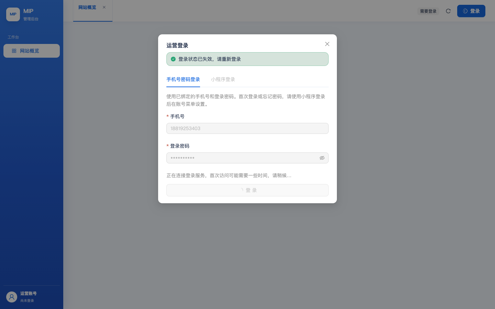
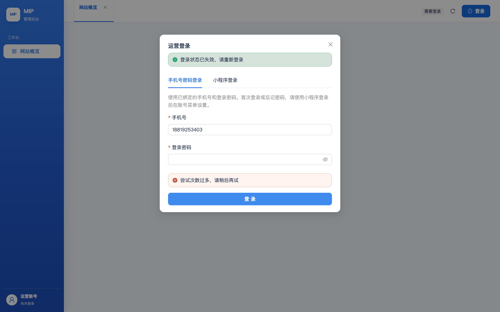

| 检查 | 结果 | 证据 |
|---|---|---|
| 发布门禁 pnpm verify:all（两端） | PASS | exit 0（admin-web verify + 小程序 verify + docs） |
BFF mip-t-admin-web-api 部署 | PASS | Status=Active · 禁客户端直调 · 0 定时器 · VPC 配置保持 |
静态包 mip-admin-console-test/ | PASS | 15/15 文件字节级 VERIFIED |
| 公开域入口更新 | PASS | index-DVFkkChc.js → index-D0iAwe4G.js（新构建） |
| 来源防护 | PASS | 无 Origin 头的登录请求被拒（403 请求来源无效） |
| 上一版不可变资产保留 | PASS | 21 个旧哈希资产并入新包，0 冲突（缓存 HTML 不 404） |
mipauth_840c70d75d87 的实际密码与 envs/test 配置不一致（哈希比对证实）。已按 .env.secrets.local 收敛密码（哈希复核 MATCH），503 全部消除；生产用户密码曾被探针误改，已同步恢复并复核（MATCH）。| 用例 | 结果 | 说明 |
|---|---|---|
| TC-01 登录页渲染 | 通过 | 手机号+密码+小程序登录双 Tab；页面无 console 错误 |
| TC-02 错误密码被拒 | 通过 | 提交错误密码被拒绝且有提示（真实请求） |
| TC-03 正确密码登录 | 失败 | 401 手机号或密码不正确 → 根因=②的账号凭证缺失（非系统故障） |
| UAT-10 退出/受保护页 | 通过 | 未登录访问 /orders 显示「需要登录」门控 |
| 来源防护（附加） | 通过 | 无 Origin 403 / 带 Origin 进入处理链 |


| 层 | ID | 模块 | 用例 | 状态 | 本次结果 / 预期 |
|---|---|---|---|---|---|
| 常规 | TC-01 | 登录与账号(§14) | 登录页渲染与元素 | 通过 | 通过 |
| 常规 | TC-02 | 登录与账号(§14) | 错误密码被拒绝 | 通过 | 通过 |
| 常规 | TC-03 | 登录与账号(§14) | 正确密码登录成功 | 失败 | 仍显示需要登录 |
| 常规 | TC-05 | 全局框架 | 侧栏五组菜单 | 阻塞 | 登录被阻塞：测试后台该账号无密码凭证（需在测试版小程序微信登录后设置密码） |
| 常规 | TC-06 | 全局框架 | 顶栏多页签 | 阻塞 | 登录被阻塞：测试后台该账号无密码凭证（需在测试版小程序微信登录后设置密码） |
| 常规 | TC-07 | 概览(§1) | 驾驶舱渲染 | 阻塞 | 登录被阻塞：测试后台该账号无密码凭证（需在测试版小程序微信登录后设置密码） |
| 常规 | TC-08 | 概览(§1) | 快捷入口跳转 | 阻塞 | 登录被阻塞：测试后台该账号无密码凭证（需在测试版小程序微信登录后设置密码） |
| 常规 | TC-09 | 用户管理(§2) | 列表 11 列原型口径 | 阻塞 | 登录被阻塞：测试后台该账号无密码凭证（需在测试版小程序微信登录后设置密码） |
| 常规 | TC-10 | 用户管理(§2) | 身份筛选含普通用户 | 阻塞 | 登录被阻塞：测试后台该账号无密码凭证（需在测试版小程序微信登录后设置密码） |
| 常规 | TC-11 | 用户管理(§2) | 权益状态四档 | 阻塞 | 登录被阻塞：测试后台该账号无密码凭证（需在测试版小程序微信登录后设置密码） |
| 常规 | TC-12 | 用户管理(§2) | 关键词搜索 | 阻塞 | 登录被阻塞：测试后台该账号无密码凭证（需在测试版小程序微信登录后设置密码） |
| 常规 | TC-13 | 用户管理(§2) | 档案页六 Tab | 阻塞 | 登录被阻塞：测试后台该账号无密码凭证（需在测试版小程序微信登录后设置密码） |
| 常规 | TC-14 | 用户管理(§2) | 档案操作入口 | 阻塞 | 登录被阻塞：测试后台该账号无密码凭证（需在测试版小程序微信登录后设置密码） |
| 常规 | TC-15 | 名片(§2) | 名片页路由直达 | 阻塞 | 登录被阻塞：测试后台该账号无密码凭证（需在测试版小程序微信登录后设置密码） |
| 常规 | TC-16 | 活动(§3) | 列表与状态筛选三态 | 阻塞 | 登录被阻塞：测试后台该账号无密码凭证（需在测试版小程序微信登录后设置密码） |
| 常规 | TC-17 | 活动(§3) | 新建活动表单字段 | 阻塞 | 登录被阻塞：测试后台该账号无密码凭证（需在测试版小程序微信登录后设置密码） |
| 常规 | TC-18 | 活动(§3) | 保存草稿 | 阻塞 | 登录被阻塞：测试后台该账号无密码凭证（需在测试版小程序微信登录后设置密码） |
| 常规 | TC-19 | 活动(§3) | 发布活动 | 阻塞 | 登录被阻塞：测试后台该账号无密码凭证（需在测试版小程序微信登录后设置密码） |
| 常规 | TC-20 | 活动(§3) | 标签设置页 | 阻塞 | 登录被阻塞：测试后台该账号无密码凭证（需在测试版小程序微信登录后设置密码） |
| 常规 | TC-21 | 活动(§3) | 行内下载签到二维码 | 阻塞 | 登录被阻塞：测试后台该账号无密码凭证（需在测试版小程序微信登录后设置密码） |
| 常规 | TC-22 | 运营管理(§4) | Banner ≤5 与列表 | 阻塞 | 登录被阻塞：测试后台该账号无密码凭证（需在测试版小程序微信登录后设置密码） |
| 常规 | TC-23 | 运营管理(§4) | 视频回顾列表 | 阻塞 | 登录被阻塞：测试后台该账号无密码凭证（需在测试版小程序微信登录后设置密码） |
| 常规 | TC-24 | 等级(§5) | 等级管理页 | 阻塞 | 登录被阻塞：测试后台该账号无密码凭证（需在测试版小程序微信登录后设置密码） |
| 常规 | TC-25 | 经验值(§6) | 流水变动前后列 | 阻塞 | 登录被阻塞：测试后台该账号无密码凭证（需在测试版小程序微信登录后设置密码） |
| 常规 | TC-26 | 贡献值(§7) | 流水关联业务列 | 阻塞 | 登录被阻塞：测试后台该账号无密码凭证（需在测试版小程序微信登录后设置密码） |
| 常规 | TC-27 | 权益(§8) | 权益流水列 | 阻塞 | 登录被阻塞：测试后台该账号无密码凭证（需在测试版小程序微信登录后设置密码） |
| 常规 | TC-28 | 权益(§8) | 发放权益表单校验 | 阻塞 | 登录被阻塞：测试后台该账号无密码凭证（需在测试版小程序微信登录后设置密码） |
| 常规 | TC-29 | 任务(§9) | 任务筛选三下拉 | 阻塞 | 登录被阻塞：测试后台该账号无密码凭证（需在测试版小程序微信登录后设置密码） |
| 常规 | TC-30 | NPC任务(§9) | 独立页列与筛选 | 阻塞 | 登录被阻塞：测试后台该账号无密码凭证（需在测试版小程序微信登录后设置密码） |
| 常规 | TC-31 | 机会(§10) | 列表 7 列与招募中文案 | 阻塞 | 登录被阻塞：测试后台该账号无密码凭证（需在测试版小程序微信登录后设置密码） |
| 常规 | TC-32 | 机会(§10) | 详情想推荐名单 | 阻塞 | 登录被阻塞：测试后台该账号无密码凭证（需在测试版小程序微信登录后设置密码） |
| 常规 | TC-33 | 订单(§11) | 列表时间列与汇总卡 | 阻塞 | 登录被阻塞：测试后台该账号无密码凭证（需在测试版小程序微信登录后设置密码） |
| 常规 | TC-34 | 订单(§11) | 详情状态时间线 | 阻塞 | 登录被阻塞：测试后台该账号无密码凭证（需在测试版小程序微信登录后设置密码） |
| 常规 | TC-35 | 战队(§12) | 战队可见性（现状记录） | 阻塞 | 登录被阻塞：测试后台该账号无密码凭证（需在测试版小程序微信登录后设置密码） |
| 常规 | TC-36 | 角色权限(§13) | 权限管理四 Tab | 阻塞 | 登录被阻塞：测试后台该账号无密码凭证（需在测试版小程序微信登录后设置密码） |
| 常规 | TC-37 | 后台账号(§14) | 账号列表与新增入口 | 阻塞 | 登录被阻塞：测试后台该账号无密码凭证（需在测试版小程序微信登录后设置密码） |
| 常规 | TC-38 | 审计(§14) | 审计类型筛选与登录视图 | 阻塞 | 登录被阻塞：测试后台该账号无密码凭证（需在测试版小程序微信登录后设置密码） |
| 常规 | TC-39 | 服务器(§15) | 服务器列表 | 阻塞 | 登录被阻塞：测试后台该账号无密码凭证（需在测试版小程序微信登录后设置密码） |
| 常规 | TC-40 | 消息(§16) | 消息管理两 Tab | 阻塞 | 登录被阻塞：测试后台该账号无密码凭证（需在测试版小程序微信登录后设置密码） |
| 流程级 | UAT-01 | 登录 → 概览 → 退出 → 受保护页重定向 | 阻塞 | 登录被阻塞：测试后台该账号无密码凭证（需在测试版小程序微信登录后设置密码） | |
| 流程级 | UAT-02 | 活动运营闭环：建草稿 → 补全发布 → 列表可见 → 详情 | 阻塞 | 登录被阻塞：测试后台该账号无密码凭证（需在测试版小程序微信登录后设置密码） | |
| 流程级 | UAT-03 | 用户档案巡检 | 阻塞 | 登录被阻塞：测试后台该账号无密码凭证（需在测试版小程序微信登录后设置密码） | |
| 流程级 | UAT-04 | 权益发放闭环：发放 100 经验值 → 流水新增 | 阻塞 | 登录被阻塞：测试后台该账号无密码凭证（需在测试版小程序微信登录后设置密码） | |
| 流程级 | UAT-05 | NPC 任务审批 | 阻塞 | 登录被阻塞：测试后台该账号无密码凭证（需在测试版小程序微信登录后设置密码） | |
| 流程级 | UAT-07 | 消息草稿创建（不发送） | 阻塞 | 登录被阻塞：测试后台该账号无密码凭证（需在测试版小程序微信登录后设置密码） | |
| 流程级 | UAT-08 | 审计留痕 | 阻塞 | 登录被阻塞：测试后台该账号无密码凭证（需在测试版小程序微信登录后设置密码） | |
| 流程级 | UAT-09 | 导航收敛与路由直达 | 阻塞 | 登录被阻塞：测试后台该账号无密码凭证（需在测试版小程序微信登录后设置密码） | |
| 流程级 | UAT-10 | 退出后访问受保护路由 | 通过 | 通过 | |
| 常规 | TC-42 | 全局质量 | 390 视口无横向溢出 | 阻塞 | 登录被阻塞：测试后台该账号无密码凭证（需在测试版小程序微信登录后设置密码） |
用例生成：依据 ame-project《管理后台 PRD v0.4》16 章 + 原型 v1 逐模块提取——常规用例覆盖 16 个模块的列表/筛选/详情/校验/权限边界；流程级用例覆盖 10 条跨模块用户旅程（登录巡检、活动建发闭环、权益发放闭环、NPC 审批、消息草稿、审计留痕、导航与直达、退出防护）。
执行方式：Playwright(Chromium) 驱动真实浏览器访问 https://test.admin.mip.cool/，真实提交登录请求；每用例独立判定+截图+console 错误归集；写操作白名单制（草稿/发放/标签类，禁退款/删除/权限变更）。
可信边界：登录后 45 条用例为阻塞而非失败——阻塞点在测试后台账号凭证缺失（②节），系统侧登录链路本身已由 503→401 的修复证明工作正常（错误密码被正确拒绝、来源防护生效、会话门控生效）。账号设置完成后重跑 diff-work/e2e/run-e2e.cjs 即可全量验收。
部署边界：本批仅部署 admin-web 前端 + BFF（业务云函数零改动，经 diff 确认）；既有 weapp/其他函数未触碰；未推送 origin/main。